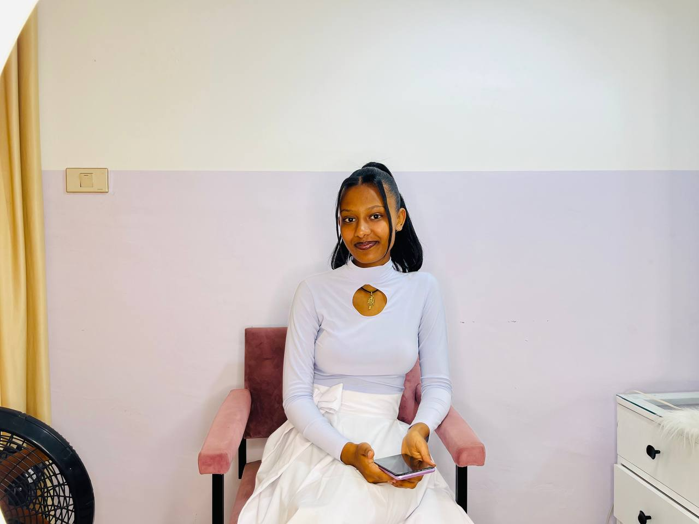

The person behind the content.
A digital creator working across TikTok, YouTube and Instagram — building video, running social accounts and representing brands on camera.

Yearsema creates short-form video and social content under the handle @arsuti_24, with a channel on YouTube as @lifewith_arsu. The work spans content creation, social media management, brand promotion and on-camera hosting.
Day to day, that means planning content, filming, editing and publishing — then managing the accounts and community that content lives on. It also means stepping in front of the camera as a host, presenter or brand ambassador when a project calls for a face and a voice, not just a video file.
What I bring
A creator's instinct for what holds attention on TikTok and YouTube, paired with the editing skill to make it look intentional — and the reliability brands need from someone managing their accounts day to day.
- 560+Videos created
- 1.4MHighest views on a single video
- 3Platforms — TikTok, YouTube, Instagram
Want the full picture?
See the work itself, or the roles and experience behind it.